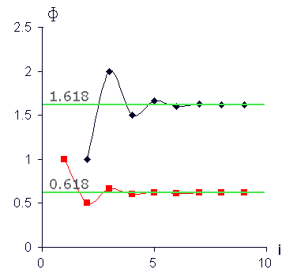
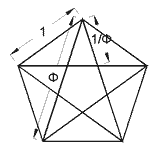

Оказва се обаче, че твърде много закономерности, наблюдавани в природата и в поведението на човека, могат да се опишат, макар и с някаква по-малка или по-голяма грешка, с числа от редицата на Фибоначи, въпреки че в някои случаи това обяснение може да изглежда преднамерено.
Всъщност алгоритъмът за образуване на поредното число от редицата на Фибоначи изразява факта, че следствието (последното число от реда) зависи от предисторията (причините) по конкретния за тази редица начин, а именно: последното число е сума от двете предходни числа. Така този алгоритъм се включва в категорията на т. нар. рекурентни формули. Доколко с алгоритъма на 'златното сечение' могат да се обяснят природни и човешки феномени зависи именно от това, доколко тези феномени се подчиняват на горната проста и същевременно съответстваща добре на 'здравия разум' рекурентна зависимост на следствието от причините, които го пораждат. До Фибоначи основните алгоритми за описване на възпроизвеждащи формули са били аритметичната и геометричната прогресия.
Често редицата на Фибоначи се свързва и със следната задача: Чифт зайци (мъжки и женски екземпляр) могат да произведат за единица време (напр. един месец) нов чифт зайци, които продължават да се размножават (в класическата задача на Фибоначи на новородения чифт зайци са му необходими два месеца, за да дадат първото си поколение, след което продължават да се размножават всеки месец). Колко е броят на живите чифтове зайци след определено време, ако никой не унищожава зайците?
Ако означим броя двойки зайци на n-тия месец с Fn , то F1=1, F2=1, F3=2, F4=3, F5=5, F6=8, F7=13, F8=21
Fn=Fn-1+Fn-2 , за всички n>2.
Броят на двойките зайци на n-тия месец е равен на броя Fn-1 двойки зайци от миналия месец плюс броят на родилите се двойки зайци, който съвпада с числото Fn-2 двойки зайци, родили през (n-2)-рия месец (нали само те даваха потомство).
Числа Fn, образуващи последователността1, 1, 2, 3, 5, 8, 13, 21, 34, 55, 89, 144, 233, … се наричат “числа на Фибоначи“, а самата последователност — ред на Фибоначи.
Човек харесва някакъв предмет заради формата му. Усещането за красота и хармония най-често произтича от съчетанието на симетрия и златно сечение.
Цялото винаги се състои от части и ако те са в "златно" съотношение – помежду си и с цялото, то това винаги е белег на структурно и функционално съвършенство в изкуството, науката, техниката и природата.
Едно от най-важните свойства на числата на Фибоначи е съществуването на т.н. коефициенти на Фибоначи, т.е. постоянни отношения на различни членове на реда. Те се определят по следния начин:
Това число се означава се с главната гръцка буква Ф (фи) – първата буква в името на Фидий.
Любопитно е, че 1/Ф = 0.61803398… Числото Ф е единственото положително число, което се превръща в
реципрочното си при изваждане на единица. Може да се представи и като сума от безкрайния ред: Ф=1+1/(1+1/(1+1/(1+ … или
Ф е границата, към която се стреми отношението на два последователни члена от реда на Фибоначи.
Златни правоъгълници са правоъгълници, чиито страни са в "златно" съотношение. "Златният" правоъгълник има някои интересни свойства.
Ако отрежем от "златния" правоъгълник квадрат, страната на който е равна на по-малката страна на правоъгълника, остатъка ще бъде отново "златен" правоъгълник, но с по-малки размери
Ако продължим да отрязваме квадрати, ще получаваме все по-малки и по-малки "златни" правоъгълници. При това ще са подредени по логаритмична спирала, съвсем същата като тази, която се образува от квадрати със страни, числата на Фибоначи.
Златна спирала е спирала, която се образува при вписване на четвърт от окръжност във всеки квадрат, получен при безкрайно разделяне на златен правоъгълник в поредица от все по-малки златни правоъгълници. Тази спирала се доближава до логаритмична спирала с център пресечената точка на диагоналите на първите два правоъгълника. Полюсът на спиралата лежи на пресечната точка на диагоналите на началния правоъгълник и първия отрязан правоъгълник. При това диагоналите на всички следващи намаляващи "златни" правоъгълници лежат на тези диагонали.
Златен триъгълник е равнобедрен триъгълник, при който отношението на дължините на бедрото и основата е равно на златното сечение.
Съществуват два вида триъгълници, при които отношението на дължините на бедрото и основата е равно на златното сечение: остроъгълен (при който основата е по-малка от бедрото и ъгълът при върха е 36°, а ъглите при основата са 72°) и тъпоъгълен (при който основата е по-голяма от бедрото и ъгълът при върха е 108°, а ъглите при основата са 36°). Вторият вид триъгълници често се нарича сребърен триъгълник.
Във всеки златен триъгълник може да се впише едновременно един сребърен и един златен триъгълник, който е φ пъти по-малък.
Пентаграмът е фигура, образувана от 5 златни триъгълника, вписани в правилен петоъгълник. Всяка от петте линии, съставящи тази фигура, дели другата в златно отношение.
Числата на на Фибоначи имат още куп удивителни свойства, които са разгледани подробно в книгите на М. Гарднер “Математически развлечения”.
Числата на на Фибоначи имат още куп удивителни свойства, които са разгледани подробно в книгите на М. Гарднер “Математически развлечения”.
След редица доста успешни удари на борса Ралф Елиот публикувал през 1939 г. серия статии в Financial World Magazine. В тях за първи път била представена теорията му, че движението на индекса Доу-Джонс се подчинява на определен ритъм. Излиза, че числата на Фибоначи могат да ви направят и богати.
Ще ни се да завършим с думите на самият Елиот: